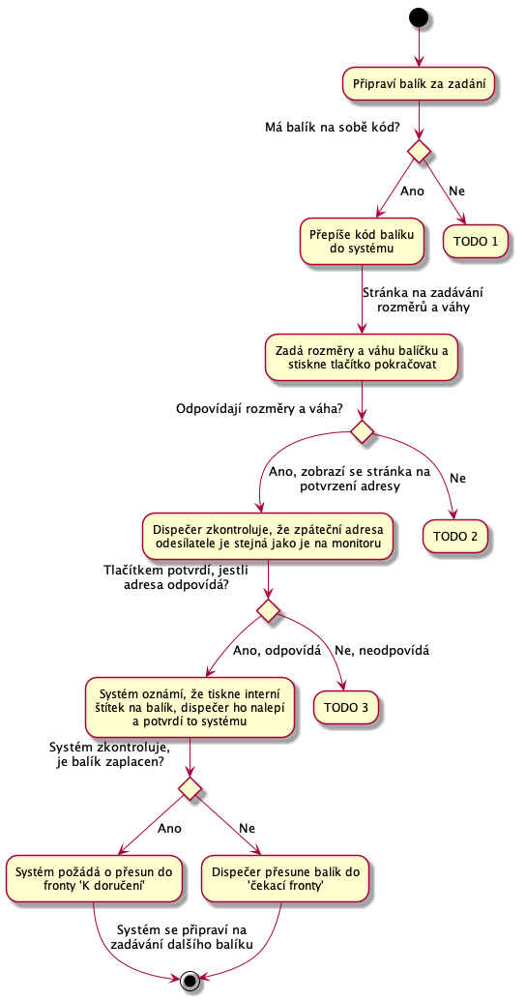
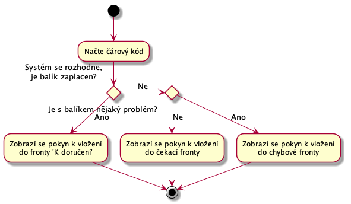

Dispečer
Dispečer je na depu. Depo je místo, kam se doručují balíky a s něho zase vydávají dalšímu doručování. Z depa se mohou balíky vydávat přepravní společnosti, nebo se mohou vydat k doručení do dalšího depa. V aktuální verzi s posílaním do dalšího depa nepočítáme.
Balíky jsou rozděleny do takzvaných front. To jsou místa, kde se mohou nechat do další práce s nimi. Fronty budou tyto:
- Přijímací fronta - Zde jsou balíky čekající na zpracování v UC-21.
- Čekací fronta - Zde balíky čekají, až zákazník zaplatí za přepravu.
- K doručení - Balíky z této fronty se rozdělí dopravcům.
- Chybová fronta - zde budou balíky, které nelze dohledat v systému, nemají kód. Nebo hrubě neodpovídají rozměrama.
- Fronty pro přepravce, napřiklad fronta pro předání DPD k finálnímu doručení adresátovi.
UC-20 - Přijetí balíku
Dispecer prijme balik a da ho do prijimaci fronty k dalšímu zpracování.
TODO Musime tomu, kdo balik prinesl nejak potvrzovat prijeti?
UC-21 - Zpracování přijatých balíku
Přijate balíky je třeba vložit do systému. Dispecer si v systemu najde obrazovku pro příjem balíků a bere jeden balik po druhem. Balík zpracuje následovně:

Dispečer na balík tiskne interní štítek.
Porovnání rozměrů a váhy. K porovnání rozměrů bude stačit například seřadit všechny hodnoty podle velikosti a pak porovnat s tolerancí 10% ? Váha také s definovanou tolerancí? TODO
TODO 1 - dispecer se pokusi dohledat zakaznika podle odesilaci adresy, pokud se povede, tak sje dal, pokud nepovede, pak se presunu do chybove fronty. Potvrdit si.
TODO 2 - Rovnou do chybove fronty?
TODO 3 - Nevim, melo by to byt v poradky, kdyby se balik posilal zpet?
TODO Navrhuji neprve kontrolovat odresu a kod, az pak rozmery, aby se v chybove fronte neobjevovali baliky bez interniho stitku.
TODO Zpracovat, nezaplaceno, na konci se musi rict fronta, kam balik dat.
TODO Chybove stavy
TODO Obrazovky
UC-22 - Zpracování čekajících balíků
Dispečer v systému otevře stránku pro zpracování fronty ‘čekajících balíků’ a bere po jednom začne balíky zpracovávat.

Do chybové fronty se balík přesune například, když zákazním nezapltí déle než definovanou dobu.
Do fronty k odeslání se balík přesune, v případě že zákazník zruší objednávku a budem balík budem posílat zákazníkovi zpět.
UC-23 - Předání balíků koncovému dopravci
Dispečer na příslušné stránce označí frontu balíků pro dopravce za uzavřenou. Potom systém vytiskne předávací protokol ????.
TODO potrebuji znovu probrat, nejsem si jist?
TODO Kazdy dopravcem se bude chovat ruzne?
UC-24 - Zpracování balíků ‘k doručení’
Dispečer v systému otevře stránku pro zpracování fronty ‘k doručení’ a bere po jednom začne balíky zpracovávat.
Čtečkou čárových kódů načte z interního štítku kód balíčku. Systém řekne k jakému dopravci je balíček určen, tedy do jaké fronty má balíček vložit. Dispečet vloží balíček do dané fronty, potvrdí to v systému a pokračuje na další balíček.
Musí existovat fronta pro Českou poštu. V případě chyby potřebujem poslat balík zpěet zákazníkovy.
TODO Budem, opravdu chtít aby to znovu vážil a měřil?
UC-25 - Zpracování balíků v chybové frontě
Tady budou balíky s interním štítkem i bez něho. Dispečer balíky projde a spojí s podporou a společně se pokusí balíky identitfikovat a domluvit se na dalším postupu.